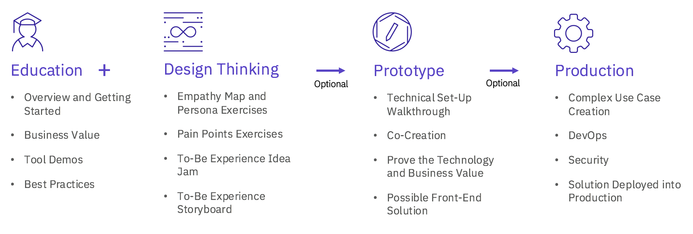

Why IMS Makerspace?
We want to help you modernize your IMS system so you can achieve your business needs. We bring a specialized IMS team on-site to facilitate Design Thinking workshops to truly understand your business scenarios and ideate on future solutions. Makerspace consists of four phases, with the Prototype and Production phase being optional:
{kind=link}
Education
Understand the assets available for modernizing the existing IMS System.
Design thinking
Identify relevant business scenarios, current pain points and brainstorm Big Ideas for future modernization solutions related to the specidic Makerspace topic. This is an essential phase to drive the ensuing prototype and Production phases.
Prototype (optional)
Use customer assets to create and deliver on a Prototype that solves a business need.
Production (optional)
Solve a comple use case(s), and deploy into production.
IMS Makerspace Topics
Each Makerspace is focused around one area of IMS Modernization. You request the area, and we deliver. Examples of Modernization include:
- APIs: Open IMS transaction and database access as APIs
- DevOps: Integrate IMS assets into enterprise DevOps pipeline
- Open Database: Access to IMS DB with JDBC and SQL, Administrate IMS database with catalog and DDL
- Java: Extend existing or develop new IMS applications with Java
Don’t see the area you want in the list above? No problem! Request another area of focus when you enroll.
IMS Makerspace Frequently Asked Questions
How many days does a Makerspace last?
This depends on the area and number of phases you request. If you are just interested in the default phases of Education and Design Thinking, this can be done in a day. However, adding on the Prototyping phase or going all the way to Deployment requires more time for co-creation and delivery. Fill out the enrollment form, and we’ll work with you to find a duration that works.
Additional Support
Can’t find what you’re looking for?
See our other support channels for more.